インストールとキーの登録
案件を作る
-
［案件］タブで作成
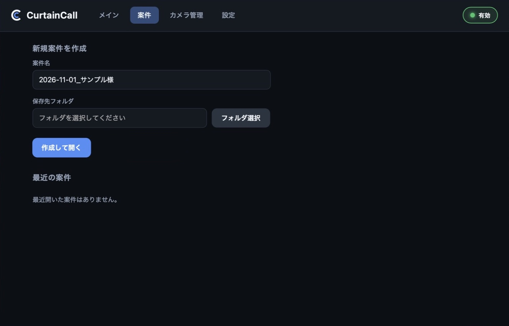
- 案件名を入れる（例：日付_お名前）
- 保存先のフォルダを選ぶ
- ［作成して開く］を押す
選んだフォルダの中に、Acam_1 などのフォルダが作られます。案件ごとに別のフォルダを選んでください。
-
メイン画面が開く
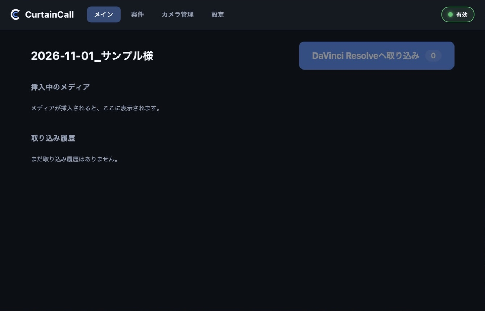
準備完了です。あとはメディアを挿すだけです。
メディアを挿す
カードリーダーにメディアを挿すと、コピーと照合が自動で始まります。
-
メディアを挿す
-
カメラを登録初めてのカメラだけ
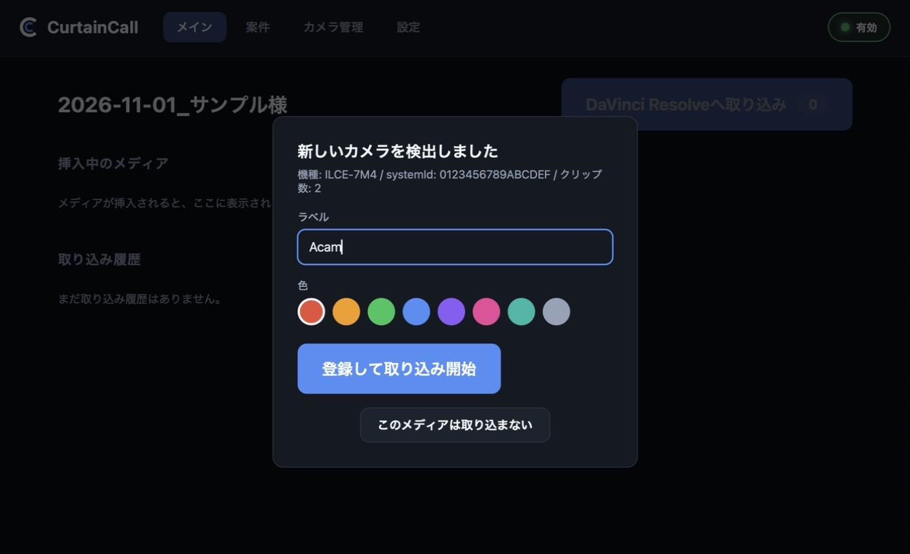
- 任意のカメラ名を登録（例：Acam、田中B など）
- カラーを選択
- ［登録して取り込み開始］を押す
登録はカメラ1台につき最初の1回だけです。次からは挿すだけで始まります（別の案件でも同じです）。
カメラは、映像ファイルのメタデータに記録された本体固有の情報で見分けます。同じ機種が複数台あっても別のカメラとして扱い、メディアを差し替えて使っても正しく判別します。
画面右下のオーバーレイウィンドウ
メディアを挿すと、画面右下にオーバーレイウィンドウが出ます。編集ソフトを最大化していても、その上に表示されます。オーバーレイウィンドウが出てもキーボードの入力先は編集ソフトのままなので、作業を止める必要はありません。
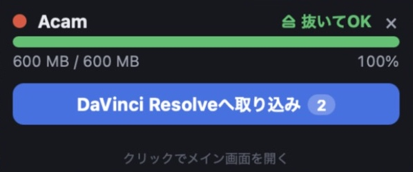
- 右上に状態が出ます（コピー中 → 検証中 → ⏏ 抜いてOK）。
- ボタンで編集ソフトへ取り込めます（6章）。
- オーバーレイウィンドウが出ると、メイン画面は編集ソフトの邪魔にならないよう隠れます（メイン画面で作業している最中は隠れません）。
- メイン画面に戻すときは、オーバーレイウィンドウをクリックするか、タスクトレイ（画面右下の通知領域）の CurtainCall アイコンを左クリックします。
- 取り込みが終わっても消えません。閉じるときは右上の × を押します（編集ソフトへ送ると自動で閉じます）。
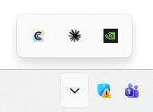
「⏏ 抜いてOK」で抜く
コピーと照合が終わると、アプリがメディアを取り外します。完了音が鳴り「⏏ 抜いてOK」が出たら、そのまま抜いてください。（取り出し操作は必要ありません。）取り外されたドライブ（E: など）は、エクスプローラーから消えます。
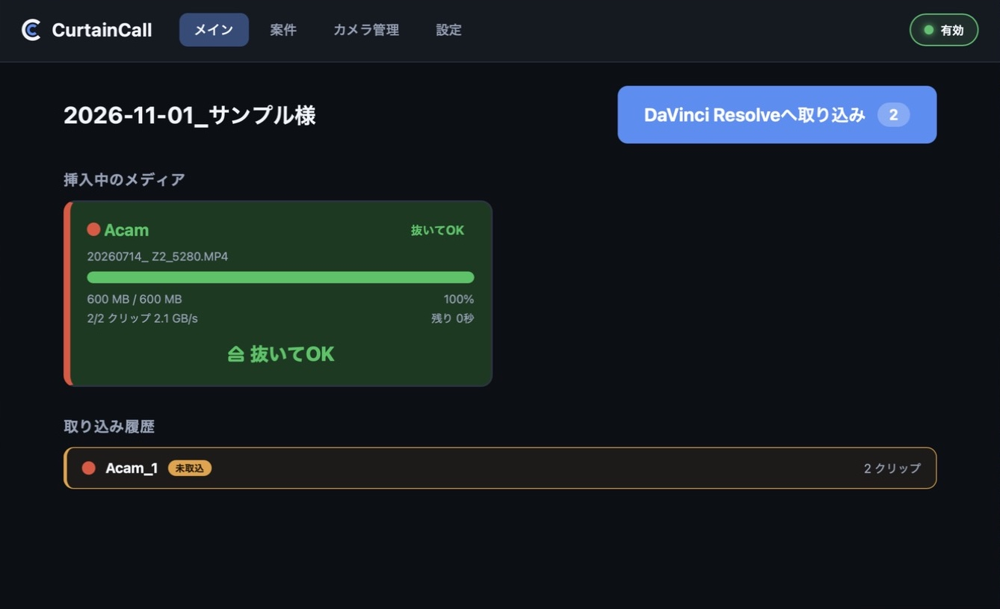
撮り足したら、もう一度挿す
同じメディアを挿し直すと、前回までに取り込んだクリップは自動で飛ばし、新しく撮ったクリップだけを取り込みます。
- シーンごとにメディアをフォーマットしなくて大丈夫です。抜いて撮影を続け、また挿すだけです。
- 取り込み済みの分を待つ必要はありません（コピーするのは新しい分だけです）。
- 同じ素材が二重に入ることはありません（フォルダにも編集ソフトにも）。
- どこまで取り込んだか覚えておく必要はありません。迷ったら挿してください。
しくみ
- 判定
- 同じカメラで撮った、名前とサイズが同じファイルは取り込み済みとみなして飛ばします。
- フォルダ
- 新しい分は Acam_2、Acam_3 … と別のフォルダに入ります。番号はカメラごとに続きます。
- 範囲
- 判定は案件ごとです。別の案件を開いて挿すと、メディアの中身をすべて取り込みます。
編集ソフトへ取り込む
-
編集ソフトを選ぶ
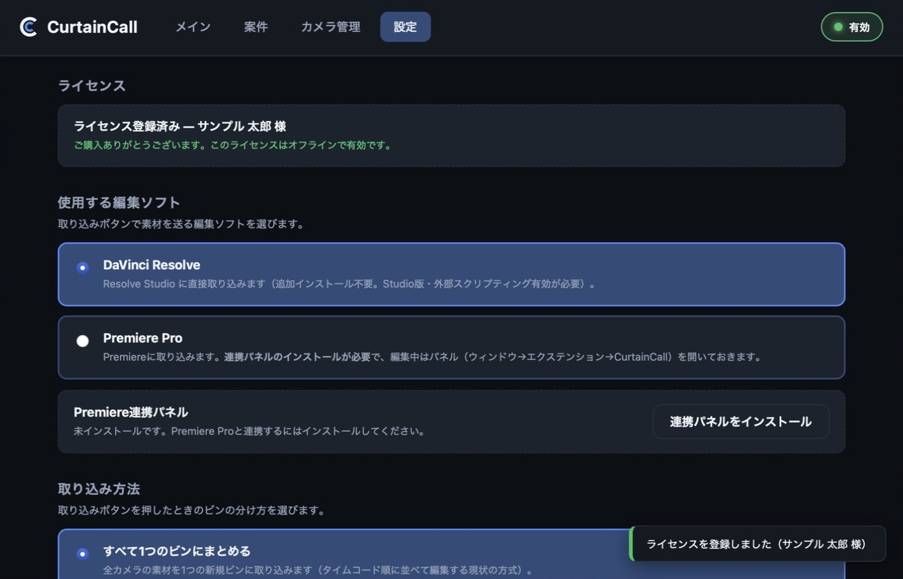
使用する編集ソフトを選びます。
DaVinci Resolve の初期設定
DaVinci Resolve
Studio版のみ- 環境設定 → システム → 一般
- 「外部スクリプトに使用」をローカル
- Resolve を再起動
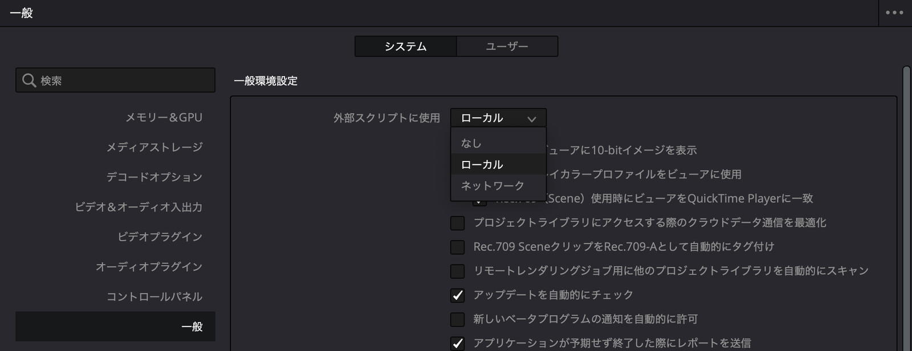
Premiere Pro の初期設定（連携パネル）
対応：Premiere Pro 2020 以降
-
Premiere Pro を一度起動入れたばかりのときだけ
初めて起動したときに Adobe のフォルダが作られます。インストールしたばかりのパソコンでは、先に一度起動してください。
-
CurtainCall の［設定］で連携パネルをインストール
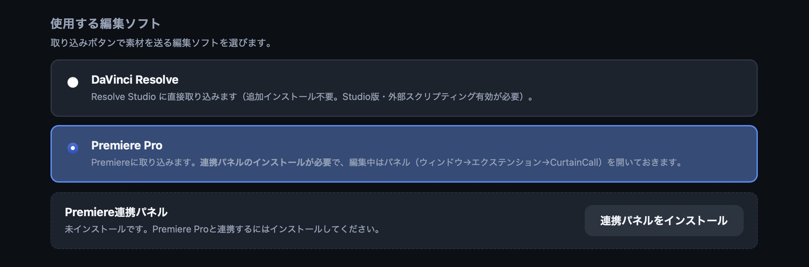
- Premiere Pro を選ぶ
- ［連携パネルをインストール］を押す
「インストール済みです」と出れば完了です。
-
Premiere Pro を再起動
起動中なら一度終了してください（パネルは起動時に読み込まれます）。
-
ウィンドウ → エクステンション → CurtainCall
Premiere でプロジェクトを開いてから操作してください。
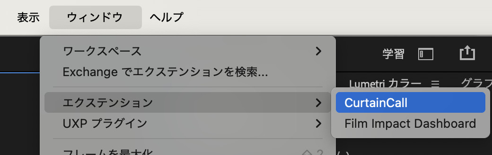
-
パネルが開く
「監視中…」と出ていれば準備完了です。
パネルは最小化しても動作します。
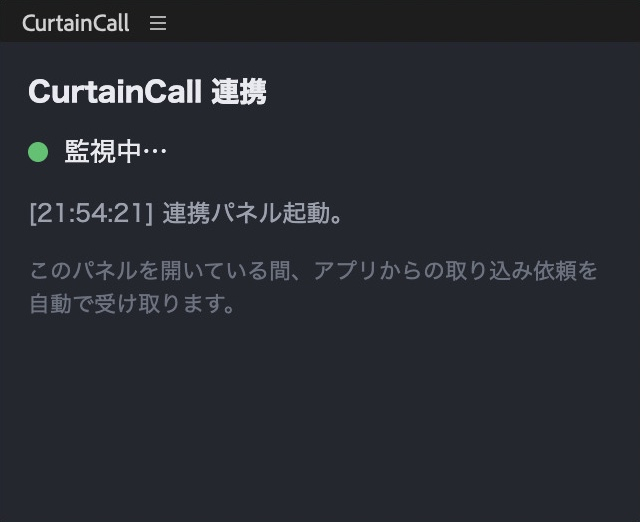
取り込む
-
編集ソフト（DaVinci Resolve/Premiere Pro）でプロジェクトを開く
-
アプリ本体またはオーバーレイウィンドウで［DaVinci Resolve/Premiereへ取り込み］を押す
ボタンの数字は、まだ送っていないクリップの数です。未取込の分をまとめて送ります。
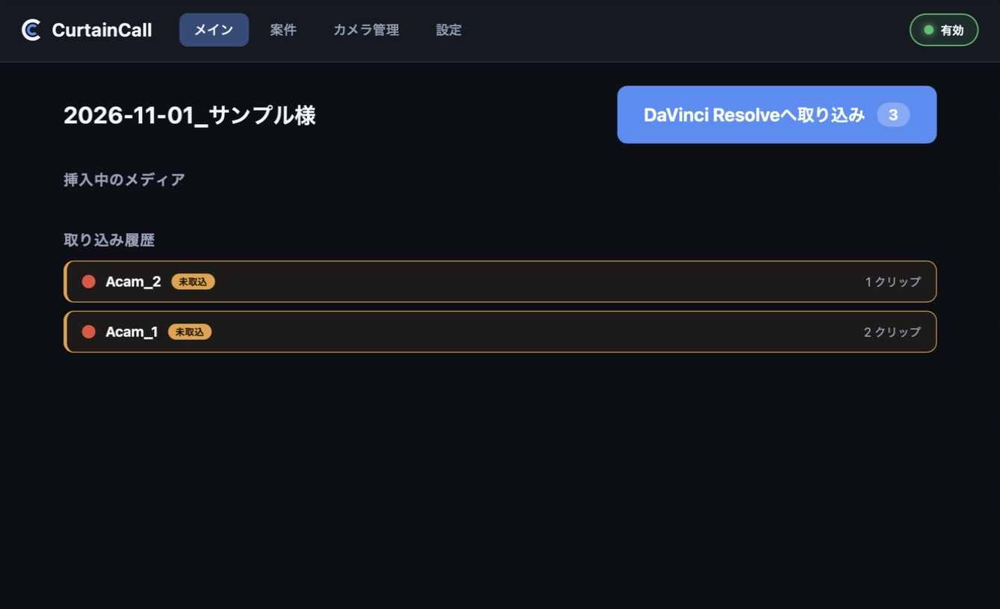
-
ビンに入る
送った分は取込済になります。ビンの分け方とタイムラインは設定で選べます。
設定
取り込み方法（ビンの分け方）
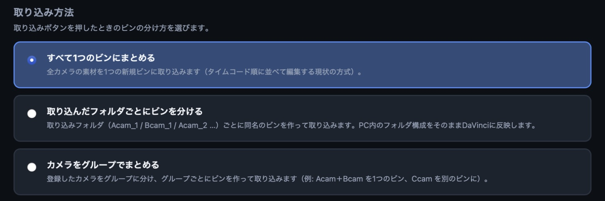
例：撮影者名を付けた3台（田中Acam・田中Bcam・佐藤Acam）
押すたびに Import_2 …と増えます。
田中・佐藤＝グループ名
取り込み後のタイムライン
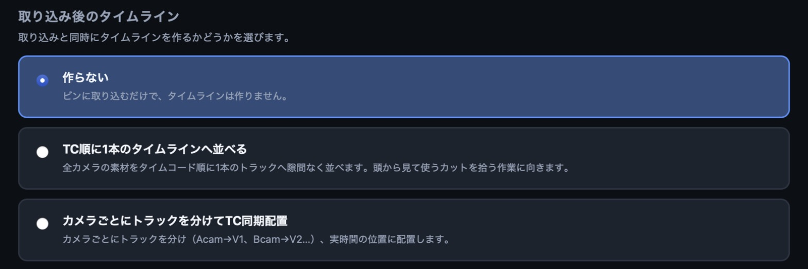
各カメラのTCを合わせておいてください。
困ったとき
- メディアを挿しても取り込まれない
-
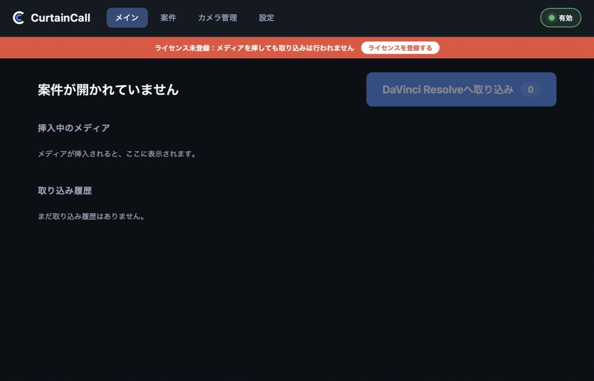
- 赤い帯 → キーを登録
- 「無効」なら押して「有効」に
- 案件を開く（メディアは挿したままでよい）
- 「⏏ 抜いてOK」が出ない
- コピー・照合の途中です。「エラー」と出たら、オーバーレイウィンドウをクリックして内容を確認してください。
- エラーで止まった（空き容量不足など）
- 原因を解消してから、タスクトレイの「ハードウェアの安全な取り外し」（またはエクスプローラー）で取り出して、挿し直してください。照合済みの分は飛ばします。
- 「完了・取り出しはタスクトレイから」と出た
- 取り込みは完了しています。タスクトレイの「ハードウェアの安全な取り外し」（またはエクスプローラー）で取り出してから抜いてください。「中止しました（タスクトレイから取り出してください）」と出たときも同じです。
- 違うメディアを挿した
- 登録画面なら［このメディアは取り込まない］を押してください。コピー中なら、メイン画面の［停止］を2回押します（その回のコピーは残りません）。
- 編集ソフトに取り込めない
- 初期設定を確認してください。アプリを更新したあとは、Premiere を再起動してください。
- Premiere に CurtainCall が出ない
- Premiere を再起動してください。それでも出なければ、CurtainCall の［再インストール］を押してから、もう一度再起動してください。
- ビンが見当たらない
- プロジェクトの最上階層か、直前に選んでいたビンの中にあります。
- もう一度送りたい
- 取り込み履歴で行を選んでから、取り込みボタンを押してください。
- ×で閉じたら画面が消えた
- 消えたのではなく、常駐しています。メディアを挿せば、そのまま取り込みが始まります。タスクトレイの CurtainCall アイコンを左クリックすると、メイン画面が戻ります。
- 完全に終了したい
-
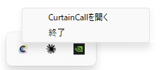
- タスクトレイの CurtainCall アイコンを右クリック
- 「終了」を選ぶ
取り込み中は「取り込み中です」という確認が出ます。［終了する］を押すとコピーが途中で止まり、［取り込みを続ける］を押すと終了せずに取り込みを続けます。
- アイコンが見当たらない
- Windows 11 では、通知領域の「^」の中に隠れていることがあります。アイコンをタスクバーへドラッグして出しておくと、いつでも見えます。
- キーをなくした・不具合
- お問い合わせフォームからご連絡ください（キーをなくしたときはこちら）。不具合のときは、フォームの項目に、アプリの版・パソコンの機種・Windowsの版・お使いの編集ソフトの版・カメラとカードを書き、画面に出たメッセージとスクリーンショットを添えていただくと、早く解決できます。メールの場合は support@zmotions.net へお送りください。